library(tidyverse)
library(scales)
library(socviz)
library(fivethirtyeight)
library(juanr)
library(gapminder)
library(ggalt)03: Amounts and proportions
Fixing axis labels
The scales package has a function label_wrap for wrapping labels that are longer than some width.
Look at the data:
arm_rests = flying |>
group_by(two_arm_rests) |>
tally() |>
drop_na()
arm_rests# A tibble: 5 × 2
two_arm_rests n
<chr> <int>
1 Other (please specify) 45
2 The arm rests should be shared 587
3 The people in the aisle and window seats get both arm rests 18
4 The person in the middle seat gets both arm rests 119
5 Whoever puts their arm on the arm rest first 87Without wrapping:
ggplot(arm_rests, aes(y = two_arm_rests, x = n)) + geom_col(alpha = .8)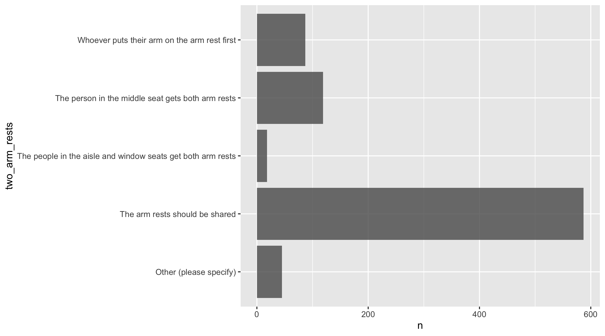
With wrapping:
ggplot(arm_rests, aes(y = two_arm_rests, x = n)) + geom_col() +
scale_y_discrete(label = label_wrap(20))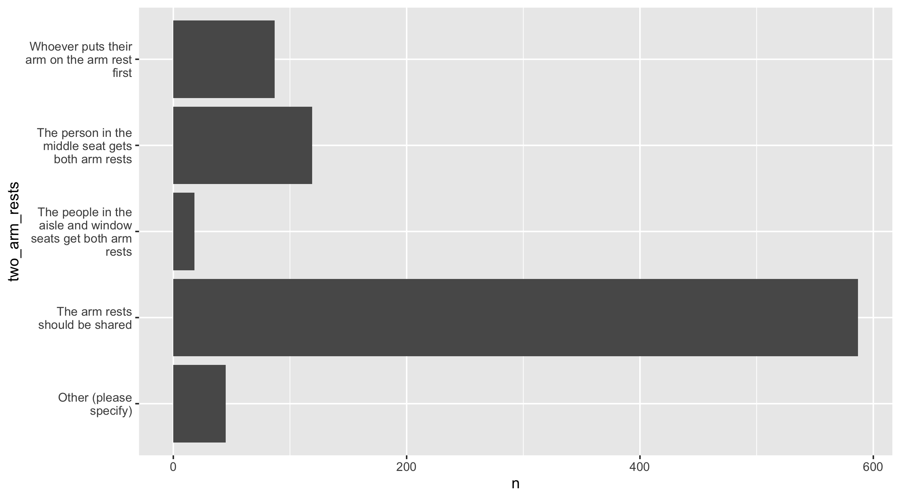
Meaningful order of bars
In order to order the categories of a plot (e.g., a barplot), ggplot uses the factor ordering of the variable. If the variable doesn’t have a factor ordering, it converts it to one, which by default orders the variable values in alphabetical order.
For example:
bonica_state = bonica |>
group_by(state) |>
summarise(total_receipts = sum(total_receipts))
bonica_state# A tibble: 50 × 2
state total_receipts
<chr> <dbl>
1 AK 11666480.
2 AL 70558810.
3 AR 29105944.
4 AZ 213923217.
5 CA 545304218.
6 CO 88242440.
7 CT 131725439.
8 DE 15121464.
9 FL 468266250.
10 GA 125098366.
# ℹ 40 more rowsDefault alphabetical ordering:
ggplot(bonica_state, aes(y = state, x = total_receipts)) +
geom_col()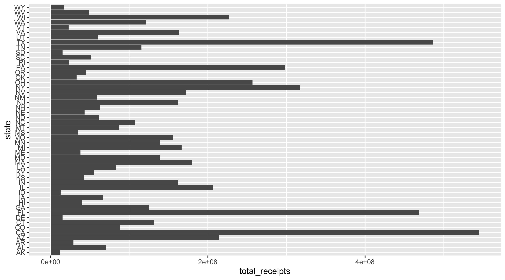
In some cases, it is more useful to order the categories by another variable, such as the variable that defines the length of the bars. We can use reorder to do this within ggplot:
ggplot(bonica_state, aes(y = reorder(state, total_receipts), x = total_receipts)) +
geom_col()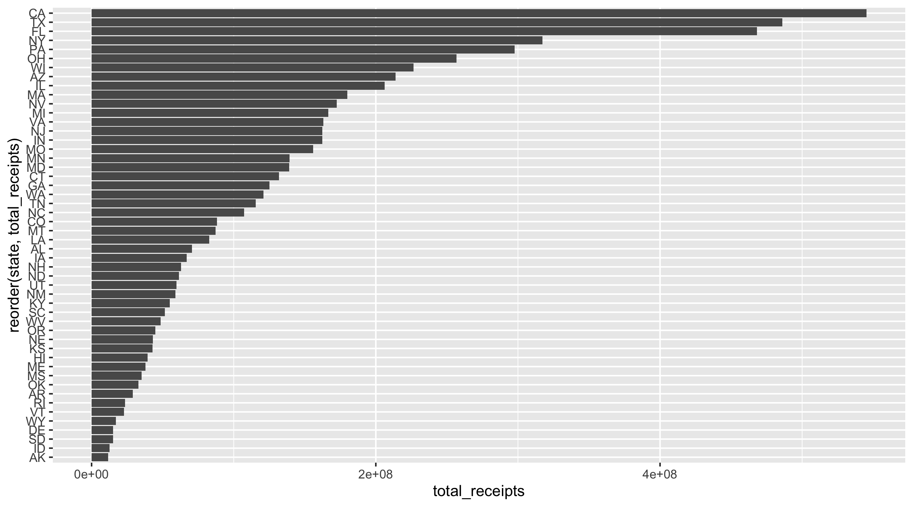
In other cases, the variable has some internal order and we want the plot to reflect that. In this case, we can use the functions from forcats to create a factor variable with the order we want:
#socviz::edu$age |> unique()
edu = edu |>
mutate(age_cat = factor(age, levels = c("25-34", "35-54", "55>"))) |>
# reverse so youngest shows up on top of graph
mutate(age_cat = fct_rev(age_cat))
ggplot(edu, aes(y = age_cat, x = total, fill = sex)) +
geom_col()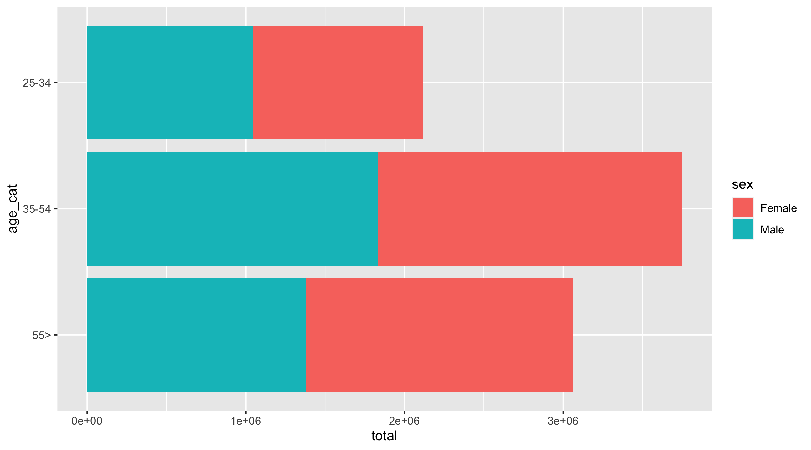
Dodged bars
By default, column or barplots are stacked:
ggplot(edu, aes(y = age_cat, x = total, fill = sex)) +
geom_col()But unless the x-axis is a proportion that ends at 100%, this is hard to read. Better to dodge the bars so they’re side by side:
ggplot(edu, aes(y = age_cat, x = total, fill = sex)) +
geom_col(position = "dodge")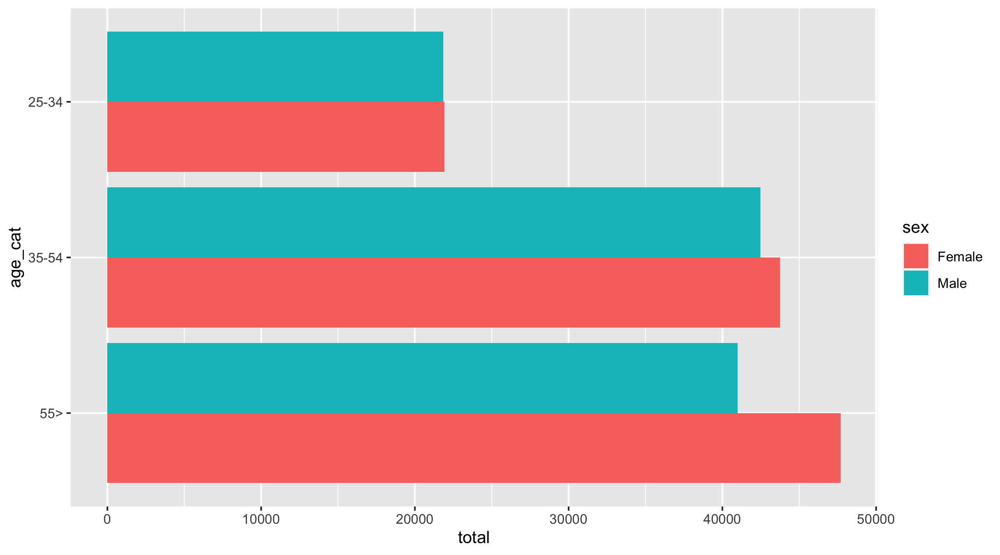
Dot plots
Dot plots we’ve seen, they don’t start at 0 by default:
gap_07 = gapminder |>
filter(year == 2007, continent == "Americas")
ggplot(gap_07, aes(y = reorder(country, lifeExp), x = lifeExp)) + geom_point()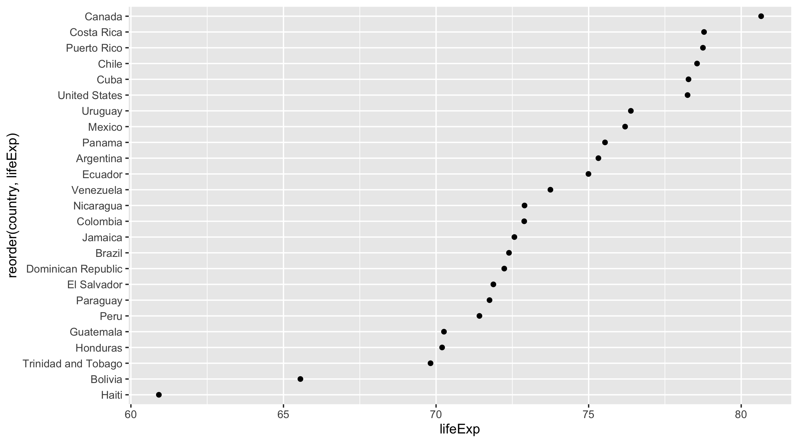
Lollipop charts
Lollipop charts use points and segments. There’s different ways to make one. One approach is with geom_pointrange, setting xmin to 0 and xmax to the amount:
gap_07 = gapminder |>
filter(year == 2007, continent == "Americas")
ggplot(gap_07, aes(y = country, x = lifeExp, xmin = 0, xmax = lifeExp)) +
geom_pointrange()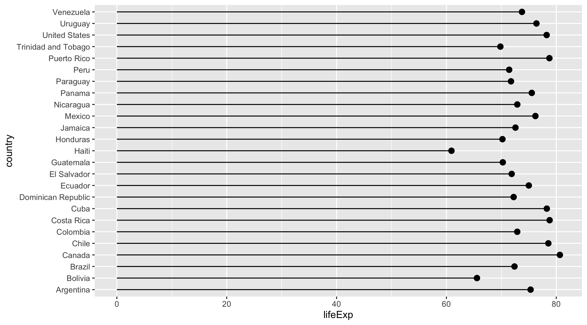
The ggalt package has a lollipop geometry with an annoying syntax. Category has to go on x, amount on y. To get categories on y-axis you have to use coord_flip.
gap_07 = gapminder |>
filter(year == 2007, continent == "Americas")
ggplot(gap_07, aes(x = country, y = lifeExp)) +
geom_lollipop() +
coord_flip()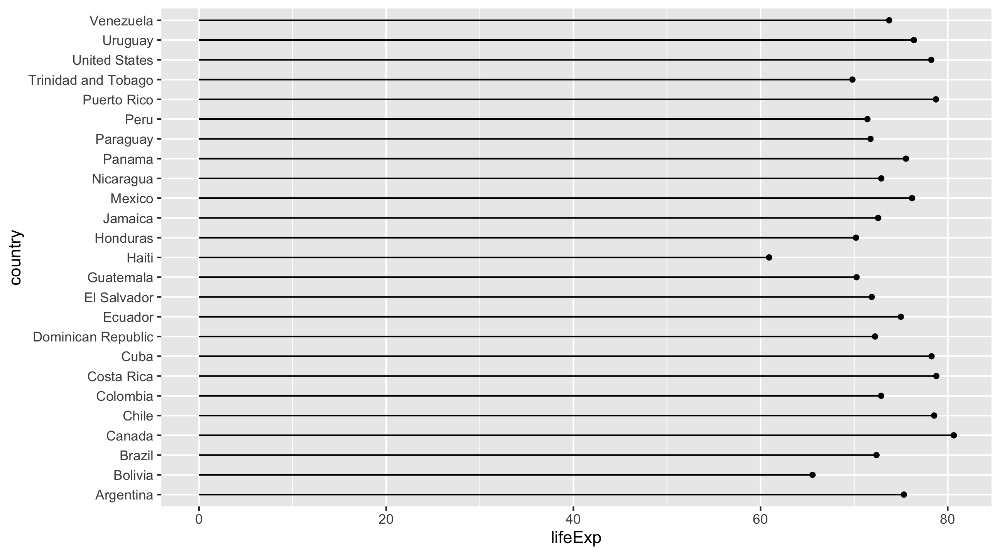
Stacked charts
Stacked charts are nice when displaying proportions that add up to 100%. For example:
crime_tab = crime |>
group_by(pais, aoj12) |>
tally() |>
drop_na() |>
mutate(percent = n / sum(n))
crime_tab# A tibble: 94 × 4
# Groups: pais [16]
pais aoj12 n percent
<fct> <fct> <int> <dbl>
1 Mexico A lot 120 0.0782
2 Mexico Some 356 0.232
3 Mexico Little 555 0.362
4 Mexico None 463 0.302
5 Mexico Don't Know 38 0.0248
6 Mexico No Response 3 0.00195
7 Guatemala A lot 205 0.136
8 Guatemala Some 398 0.264
9 Guatemala Little 490 0.325
10 Guatemala None 392 0.260
# ℹ 84 more rowsggplot(crime_tab, aes(y = pais, x = percent, fill = aoj12)) +
geom_col(width = 1, color = "white") +
theme(legend.position = "top") +
scale_fill_viridis_d(option = "mako") +
# to get rid of space between 0 and labels
coord_cartesian(xlim = c(0, 1), expand = FALSE)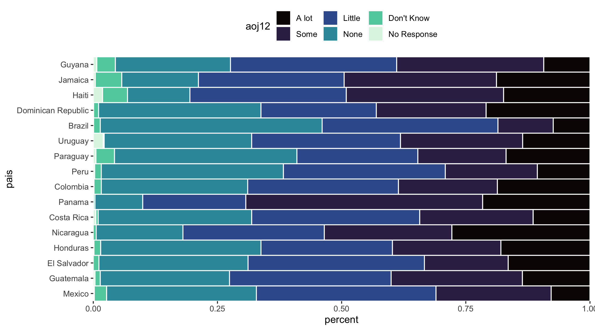
facet wrap
Another alternative is to use facet_wrap to create mini panels:
ggplot(crime_tab, aes(y = aoj12, x = percent)) +
geom_col(width = 1, color = "white") +
facet_wrap(vars(pais))
Heat map
Heat maps use the fill aesthetic. Here’s a good place to try out a custom fill scale.
life_year = gapminder |>
group_by(year, continent) |>
summarise(lifeExp = mean(lifeExp, na.rm = TRUE))
life_year# A tibble: 60 × 3
# Groups: year [12]
year continent lifeExp
<int> <fct> <dbl>
1 1952 Africa 39.1
2 1952 Americas 53.3
3 1952 Asia 46.3
4 1952 Europe 64.4
5 1952 Oceania 69.3
6 1957 Africa 41.3
7 1957 Americas 56.0
8 1957 Asia 49.3
9 1957 Europe 66.7
10 1957 Oceania 70.3
# ℹ 50 more rowsggplot(life_year, aes(x = year, y = continent, fill = lifeExp)) +
geom_tile() +
scale_fill_viridis_c(option = "mako") +
theme_minimal() +
theme(legend.position = "top")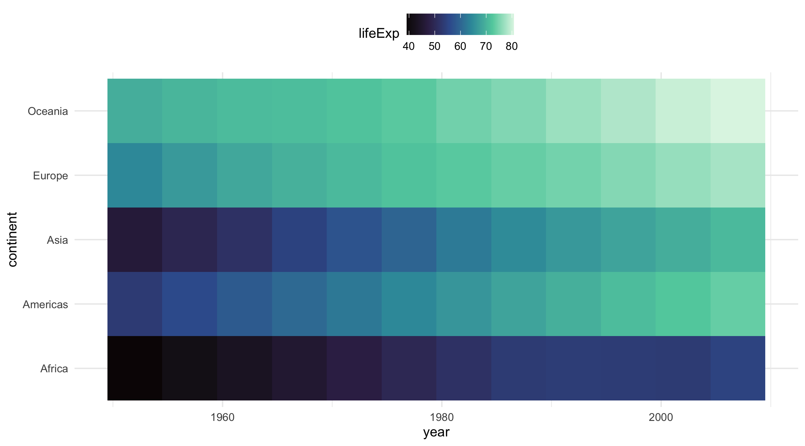
Patrick’s question
gap_07 = gapminder |>
filter(year == 2007)
ggplot(gap_07, aes(x = continent, y = lifeExp, fill = country)) +
geom_col(position = "dodge") +
theme(legend.position = "none")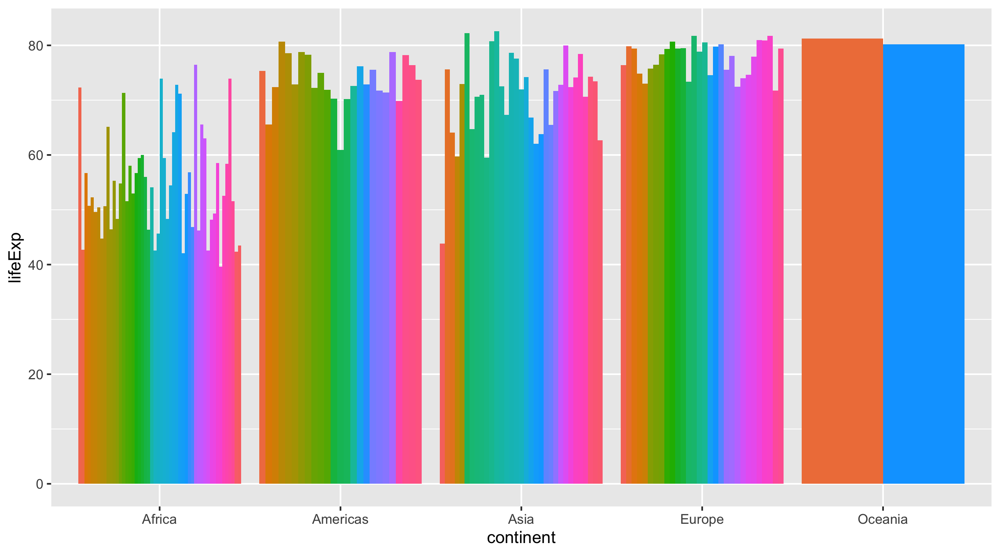